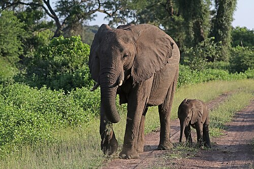
EndangeredLoxodonta africana
African savanna elephant
Found in Niassa, Gorongosa, Limpopo and Maputo national parks. Maputo's coastal herd was the reason the reserve was created in 1932.
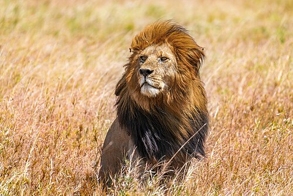
VulnerablePanthera leo
Lion
Niassa holds one of the largest lion populations left in Africa. In Gorongosa a handful of survivors of the war have grown into a thriving population.
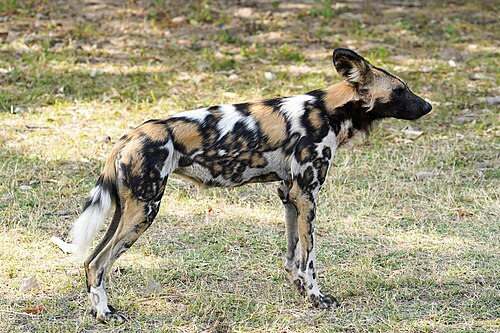
EndangeredLycaon pictus
African wild dog
Packs roam Niassa, and wild dogs returned to Gorongosa in 2018 after decades of absence, now breeding successfully.
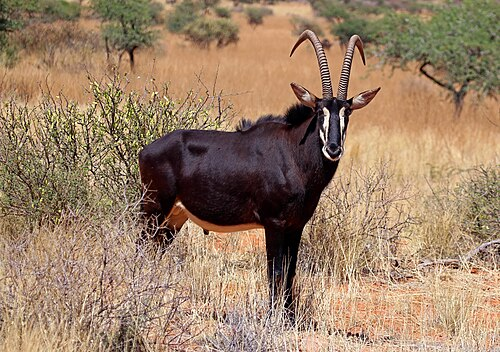
Least concernHippotragus niger
Sable antelope
A striking black antelope with long curved horns, typical of the miombo woodland of Niassa and the centre.
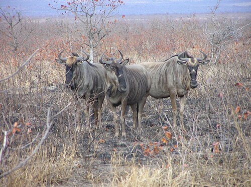
SubspeciesConnochaetes taurinus johnstoni
Niassa wildebeest
A wildebeest with a white chevron across its face, found in the Niassa Reserve and southern Tanzania.
Photo: a blue wildebeest in Kruger, South Africa, not the Niassa form.
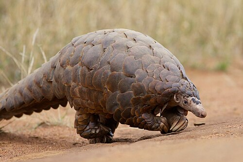
VulnerableSmutsia temminckii
Temminck's ground pangolin
A scaly anteater, heavily trafficked for its scales. Pangolins rescued from smugglers are rehabilitated and released in Gorongosa.
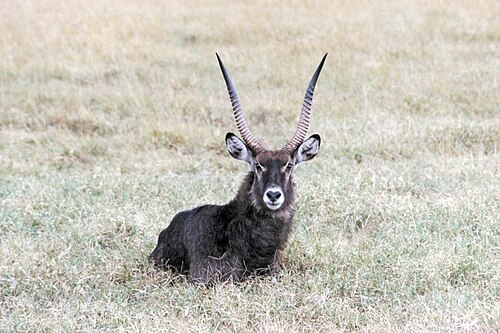
Least concernKobus ellipsiprymnus
Waterbuck
Now the most numerous large animal in Gorongosa, grazing the Urema floodplain in tens of thousands.
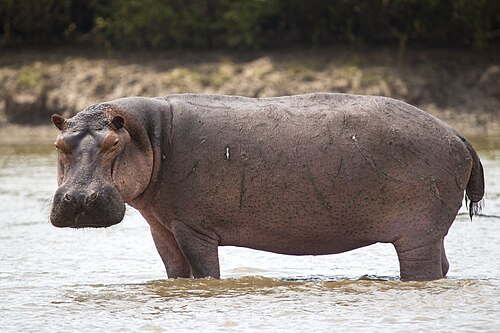
VulnerableHippopotamus amphibius
Hippopotamus
Common in the Zambezi, Lake Urema and the coastal lakes of Maputo National Park.
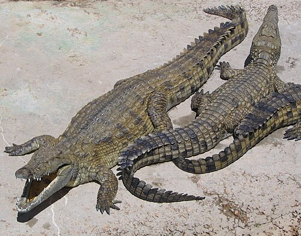
Least concernCrocodylus niloticus
Nile crocodile
Found in most large rivers and lakes, including Cahora Bassa. Conflicts with people at river crossings are a real danger.
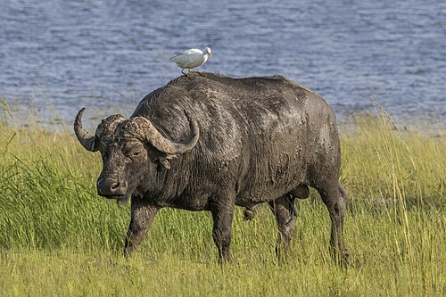
Near threatenedSyncerus caffer
African buffalo
The Zambezi Delta around Marromeu once held one of Africa's largest herds, and numbers there have been recovering.
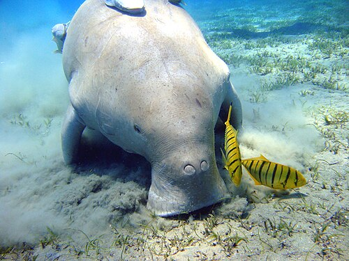
VulnerableDugong dugon
Dugong
A seagrass-grazing relative of the manatee. Bazaruto holds the last viable population on the East African coast, which is itself assessed as critically endangered.
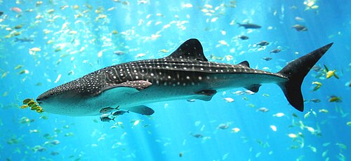
EndangeredRhincodon typus
Whale shark
The largest fish in the sea, a filter-feeder often seen close to shore off Tofo and the Inhambane coast.
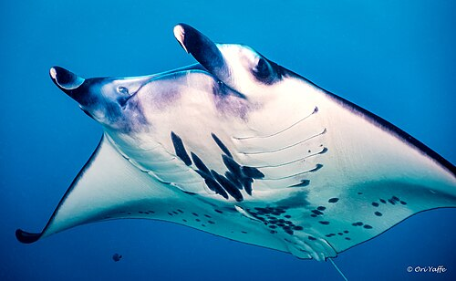
VulnerableMobula alfredi
Reef manta ray
Visits cleaning stations on the reefs off Tofo, where small fish pick parasites from its skin.
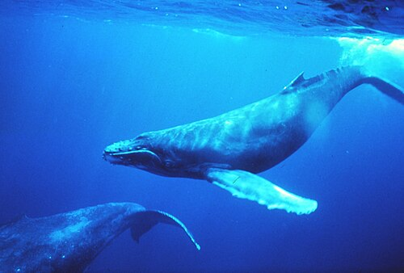
Least concernMegaptera novaeangliae
Humpback whale
Humpbacks swim up from Antarctic feeding grounds to breed and calve off Mozambique between July and October.
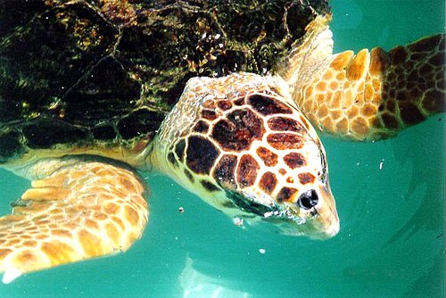
VulnerableCaretta caretta
Loggerhead turtle
Nests on the beaches of Maputo National Park alongside the leatherback, the largest turtle in the world.
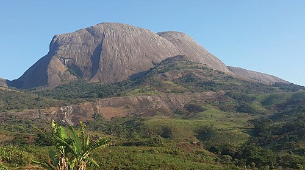
EndemicApalis lynesi
Namuli apalis
A small warbler found only in the forest patches of Mount Namuli, and nowhere else on Earth.
Photo: Mount Namuli, the bird's only home.
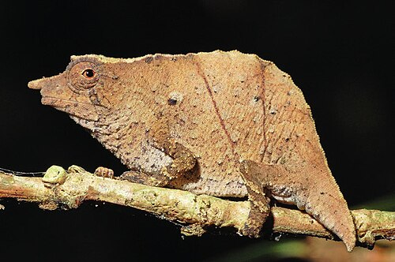
EndemicRhampholeon
Pygmy chameleons
Tiny leaf-litter chameleons, a few centimetres long. Mount Mabu and other isolated mountains in Mozambique each have their own species.
Photo: a related pygmy chameleon, Rhampholeon beraduccii, from Tanzania.
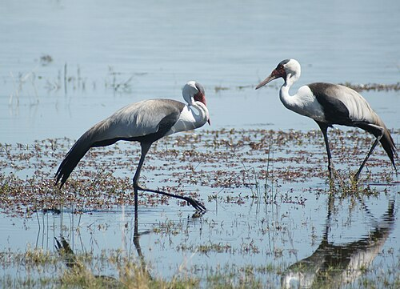
VulnerableGrus carunculata
Wattled crane
A tall crane of open floodplains. The Zambezi Delta is one of its most important homes in Africa.
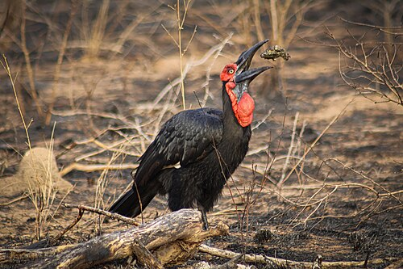
VulnerableBucorvus leadbeateri
Southern ground hornbill
A large black bird with a red face that walks the grassland in family groups; its booming call carries for kilometres.
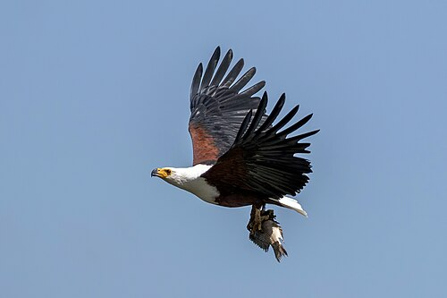
Least concernHaliaeetus vocifer
African fish eagle
Perched above rivers and lakes across the country. Its ringing cry is one of the classic sounds of Africa.
No species match this habitat.